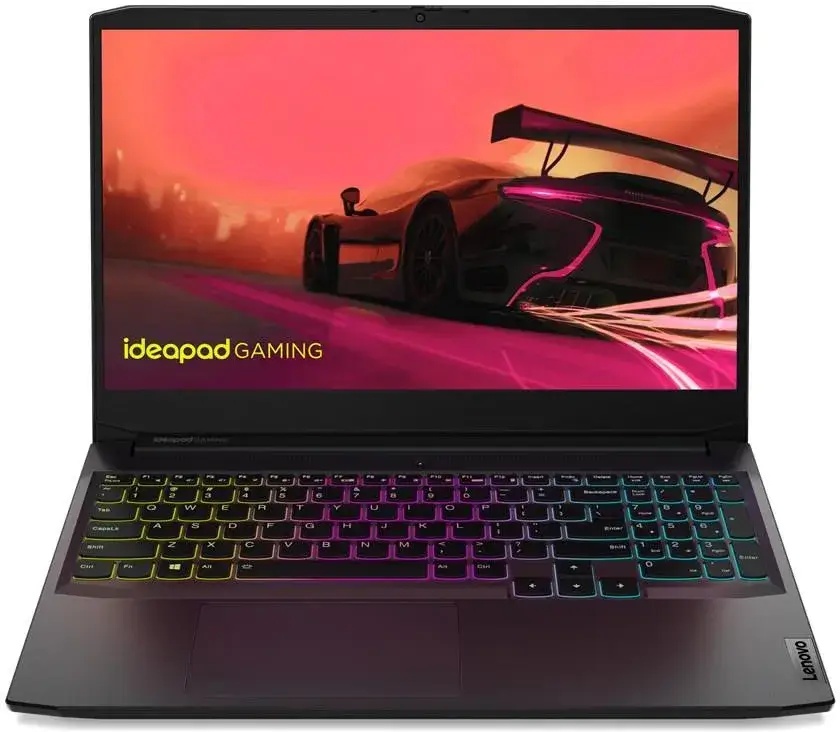

Moja pasja: Kompy i urządzenia

Składanie i serwisowanie sprzętu to moja najmocniejsza strona. Dobieram podzespoły tak, aby wyciągnąć maksimum wydajności w określonym budżecie. Niestraszne mi systemy chłodzenia wodnego, skomplikowany cable management czy overclocking.
Moje specyfikacje PC:
AMD Ryzen 7 5800H
NVIDIA GeForce GTX 1650
16 GB RAM
Windows 11 Pro